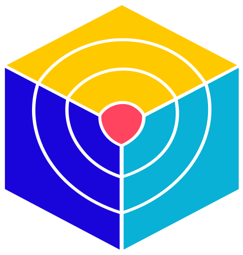
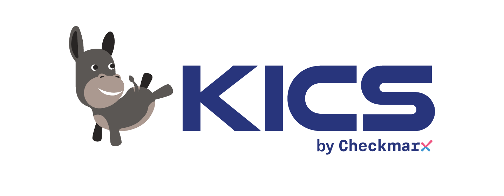

Risk Score
One number per application, and the reasoning behind it.
Exposure, data sensitivity, exploitability and change velocity — weighted your way, never a black box.
How the score works →Application Risk Intelligence
M.A.R.I.A. reads the output of the scanners you already run — SARIF, SBOMs, secrets, dependencies — and turns it into one risk score per application, per pull request, over time.
Reads scanner output — SARIF, CycloneDX, JSON. Sits on top of the tools you already have. Priced per repository, never per developer.
Internet-facing · handles PII · deployed 4×/week
spring-core, reachable from an exposed endpointspring-core 6.1.4 → 6.1.6 — risk 84 → 413 of 212 findings account for 61% of this application's risk.
Illustrative example
M.A.R.I.A. doesn't replace your tools. It reads them.


Anything that speaks SARIF, CycloneDX or JSON findings.
You have 1,000 vulnerabilities.
You don't know which one matters.
Your tools don't agree with each other.
Your team stopped reading the alerts months ago.
THE SHIFT
A 9.8 CVE in a library you never call, inside an internal tool that holds no data, is not your problem. A medium-severity flaw in the service that handles payments and ships four times a week is.
Severity is a property of the vulnerability. Risk is a property of your application. M.A.R.I.A. calculates the second one.
HOW IT WORKS
Point M.A.R.I.A. at the repositories you want covered. It works from findings and repository metadata.
Your existing scanners upload their output — SARIF, CycloneDX, JSON. M.A.R.I.A. deduplicates, normalizes and correlates it into one model.
Every application gets a risk score with the reasons behind it. Every pull request gets a risk delta before merge. Every week you can see what moved, and why.
IN THE PULL REQUEST
This is the shape of what a developer receives — in the review they already have open, about code they wrote minutes ago.
🔎 M.A.R.I.A. — risk impact of this pull request
payments-api Risk 41 → 58 (+17, High)
▲ Added
· jsonwebtoken 8.5.1 — CVE-2022-23529, critical, fix in 9.0.0
· New public route POST /api/v1/refund — no rate limiting detected
▼ Removed
· spring-core upgraded 6.1.4 → 6.1.6 — closes CVE-2025-31324 (−23)
⚑ Needs a decision
jsonwebtoken 8.5.1 is 3 major versions behind and sits in the auth path.
Upgrading to 9.0.0 would make this PR a net −6 instead of +17.
Not blocking. Baseline updates on merge.Illustrative example
WHAT'S INSIDE
Risk Score
Exposure, data sensitivity, exploitability and change velocity — weighted your way, never a black box.
How the score works →Pull Request Risk
A comment on the PR with the delta, the cause, and the fix that would flip it.
See it in the PR →Risk Timeline
Answer "are we better than last quarter?" with evidence instead of anecdote.
See the timeline →Normalization
The same issue reported by four scanners becomes one finding with four sources of evidence.
How normalization works →Developer Focus
Not a dashboard nobody has a reason to open. One thing to do, with the reason attached.
Why this matters →WHAT M.A.R.I.A. IS NOT
M.A.R.I.A. doesn't find vulnerabilities. Your tools already do that, and they're good at it.
Keep Semgrep. Keep Trivy. Keep whatever works. M.A.R.I.A. sits above them and makes their output usable.
Hire ten engineers and the bill stays the same. You pay for repositories, because that's what carries the risk.
This is built around the problems teams have this quarter, not around a checklist for an analyst report. That's a deliberate trade-off: you'll find capabilities here that bigger platforms lack, and enterprise checkboxes there that this doesn't have yet.
PRICING
Every feature in every plan. No per-seat pricing. No "contact us" to see a number.
from $9.99/month
Per repository, per month:
Example: 30 repositories = $60/month. That's it.
All features included. No hidden tiers.
Join the waitlistone payment
Pay once, use it for good:
One-time payment. No renewal, no surprise invoice.
All features included. No hidden tiers.
Reserve your spotFOUNDING TEAMS
$249
Lifetime access, up to 50 repositories
This isn't a discount. It's cheaper than the $299 lifetime plan because founding teams pay with something else: telling me what's wrong with the product while it's still cheap to change.
Become a founding teamWHY THIS EXISTS
Maria Jeane Pereira (1956–2020) spent her life taking care of people, mostly people no one else was taking care of.
The acronym is real — Management Application Risk Integrated Analysis. So is the reason behind it: software should have someone paying attention to it.
I'm Cássio Pereira. I build this alone, on purpose, and I'd rather fix what hurts teams today than ship features that demo well.
STRAIGHT ANSWERS
No. M.A.R.I.A. doesn't scan anything. It consumes what your scanners produce — SARIF, CycloneDX, JSON findings — and turns it into risk you can act on. If your scanners are working, M.A.R.I.A. makes them useful. If you have none yet, start with the free Open Scan Pack.
Use the free Open Scan Pack: pick a stack of open-source scanners, download ready-made CI templates, and run them in your own pipeline. No login, no repository access, nothing leaves your CI. Once those run, you have the input M.A.R.I.A. needs.
No, and you shouldn't. M.A.R.I.A. is only useful because your scanners already work. It sits above them, removes the duplicates, and puts the remaining findings in order of what actually matters.
From the properties of the application, not just the severity of the finding: exposure, data sensitivity, exploitability, reachability, how often the code changes, and the findings themselves. Every score opens up to show the factors that produced it, and the weights are yours to change — a fintech and an internal tools team don't share a risk model. See how the score works →
Because charging per developer punishes you for growing the team, and your risk doesn't scale with headcount — it scales with the code you own. Ten engineers on twelve repositories carry roughly the same application risk as three engineers on twelve repositories.
EARLY ACCESS
Join the waitlist and I'll reach out personally when your spot opens. Founding teams first.